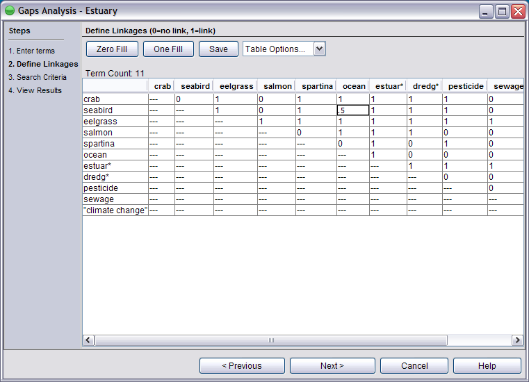

Here you enter the value to represent the relationship between each two ecosystem components (dyad). We suggest establishing criteria by which you define the linkages in order to be consistent in the analysis. (For more information, see the FAQ section about conceptual ecosystem models.)

Zero fill and One fill buttons are included to help you fill out the table, especially in situations where you have mostly linkages or mostly zeroes. Enter values into cells just as you would for any spreadsheet. If you do not have values for the ecosystem relationships, you can create the table based on existence or absence of a linkage, enter only zeroes (absence of relationship) and ones (ecosystem linkage). Decimal numbers may also be used.
To add or remove an ecosystem element to the table or rearrange elements, return to previous list screen (click the Previous button).
Press the Save button to save your ecosystem for use later (file is saved in the "save" folder with .ebm extension).
You must fill in each cell to continue. Once all cells are filled, press Next.